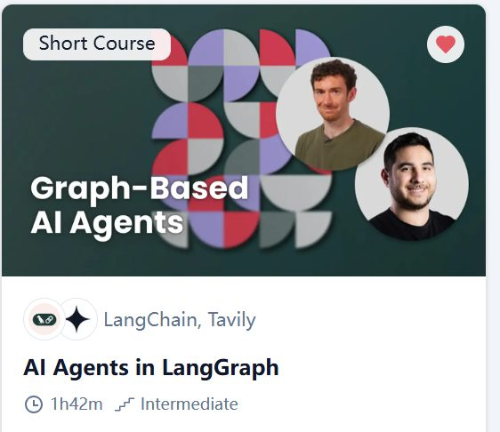

Learning Record 01
AI Agents in LangGraph

网站：AI Agents in LangGraph - DeepLearning.AI
收获
了解了一个裸LLM结合一些python code怎么搭建出Agent,以及LangGraph怎么赋能搭建Agent，
手把手搭了一个React风格的Agent
了解了很多关于Agent的概念，使原来抽象的概念一下容易理解了很多，比如Persistence（持久化）, Streaming(实时看进度，不等跑完)，工具调用等
用Multi-Agent架构做了一个调研小助手（原教程中叫Essay Writer）
了解了LangGraph的最基本模式，体验到了它让搭建Agent这个过程变得非常有趣